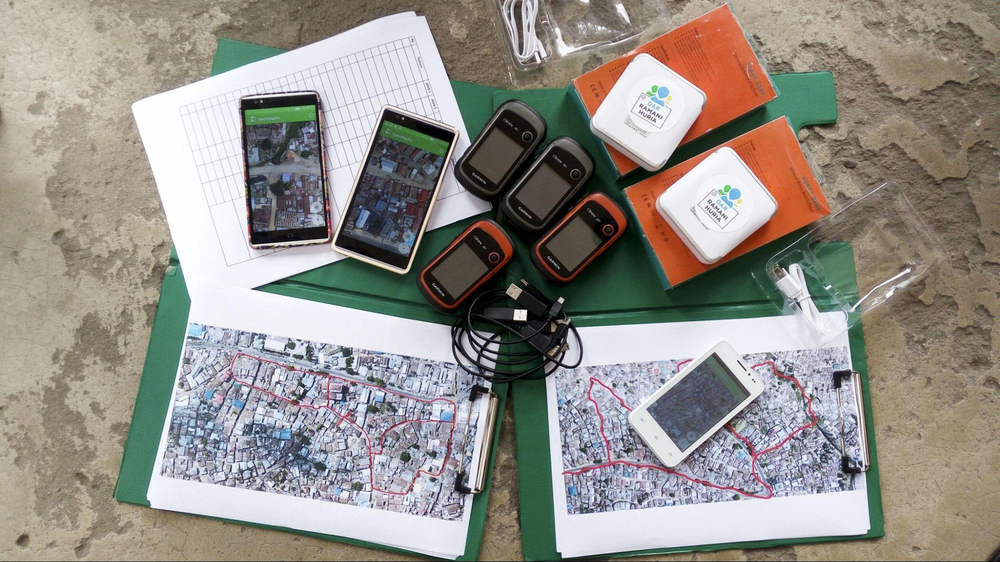

2.0 Préparation de la cartographie sur le terrain
Aperçu Général
Dans cette section, les gestionnaires de projet trouveront les outils et les ressources pour déterminer quels outils de collecte de données sont appropriés et comment naviguer dans les différentes étapes techniques nécessaires à la préparation d’un projet de cartographie de terrain, notamment :
- Des présentations et des guides étape par étape pour développer un modèle de données adapté au téléchargement sur OpenStreetMap.
- Des ressources pour déterminer la collecte de données mobiles, les applications de navigation et les options de serveur adéquates pour votre projet.
- Des guides et des ressources détaillées pour la configuration d’applications telles que ODK Collect.

Tout projet de terrain nécessitera un certain degré de mise en place technique de la cartographie de terrain, quelle que soit la complexité du processus de collecte des données. Cette section est conçue pour guider les gestionnaires de projet et les membres de la communauté dans le processus de prise de décision afin de déterminer quels outils et quelles étapes sont nécessaires pour leur projet spécifique. Il existe de nombreux guides techniques sur la configuration et l’utilisation d’outils spécifiques tels qu’ODK Central. Afin de soutenir efficacement les gestionnaires de projet, des guides détaillés sont fournis pour certains outils et processus pour lesquels il n’existe pas de documentation externe ou pour lesquels HOT a déjà créé des documents sur mesure. Pour les outils et les processus pour lesquels il existe des guides et des documents de qualité en dehors des ressources de HOT, des liens externes ont été fournis.
- Conception du modèle de données couvre le flux de travail et les outils nécessaires au développement d’un modèle de données pour la collecte de données OSM.
- Applications de collecte de données fournit des conseils sur la sélection de l’application de collecte de données appropriée pour votre projet. Des sous-pages fournissent également des instructions et des ressources détaillées sur la mise en place d’outils spécifiques tels que ODK.
- Applications de navigation fournit une vue d’ensemble des applications de navigation et de la manière dont elles peuvent être utilisées par les chefs de projet dans le cadre de leur projet.
- Le serveur de collecte de données fournit des conseils pour déterminer si un serveur est nécessaire pour votre projet et pour sélectionner le serveur approprié en fonction des besoins en données et en ressources.
- Créer des formulaires XLS pour ODK fournit des indications sur la manière de créer un formulaire XLS pour ODK Collect ou d’autres applications basées sur ODK (par exemple, Kobo Toolbox).
- Configuration d’un Gestionnaire de Tâche pour la cartographie de terrain fournit des conseils sur le nouvel outil de HOT pour soutenir la cartographie de terrain, un gestionnaire de tâches de cartographie de terrain.
- Création des Mbtiles pour ODK fournit des conseils sur la construction d’un MBtile pour soutenir les activités de cartographie hors ligne.
La (les) présentation(s) suivante(s) peut (peuvent) être utilisée(s) pour animer une formation ou un atelier :